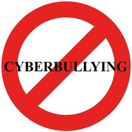

Welcome to Tokyo James' Anti-Cyberbullying Campaign
Join us in raising awareness and combating cyberbullying!
What is Cyberbullying?
Cyberbullying includes any bullying that occurs through digital devices like smartphones, computers, and tablets. It can happen through SMS, Text, and apps, or online in social media, forums, or gaming where people can view, participate in, or share content. Examples of cyberbullying include sending threatening emails, spreading false information on social media, and posting humiliating pictures or videos
Forms of Cyberbullying
- Harassment: Repeatedly sending offensive, rude, and insulting messages.
- Denigration: Spreading rumors or false statements about someone to damage their reputation.
- Impersonation: Hacking someone's account and posting inappropriate content under their name.
- Outing and Trickery: Sharing someone's secrets or embarrassing information online.
- Exclusion: Intentionally excluding someone from an online group.

Impacts of Cyberbullying
The effects of cyberbullying can be profound and long-lasting. Victims may experience a range of emotional, psychological, and physical issues, including:
- Emotional Distress: Feelings of sadness, anger, frustration, and helplessness.
- Mental Health Issues: Increased risk of anxiety, depression, and suicidal thoughts.
- Academic Problems: Lower academic performance and increased absenteeism.
- Social Isolation: Withdrawal from family, friends, and social activities.
- Physical Symptoms: Headaches, stomachaches, and other stress-related symptoms.

Preventing Cyberbullying
Preventing cyberbullying requires a collaborative effort involving parents, educators, students, and policymakers. Here are some effective strategies:
- Education and Awareness: Teaching children and teens about the responsible use of technology and the consequences of cyberbullying.
- Open Communication: Encouraging open and honest conversations between parents, children, and educators about online activities and experiences.
- Establishing Rules: Setting clear rules and guidelines for acceptable online behavior and the consequences of cyberbullying.
- Monitoring and Supervision: Keeping an eye on children's online activities and using parental control software to monitor usage.
- Empowerment: Encouraging victims to speak up and report incidents of cyberbullying.